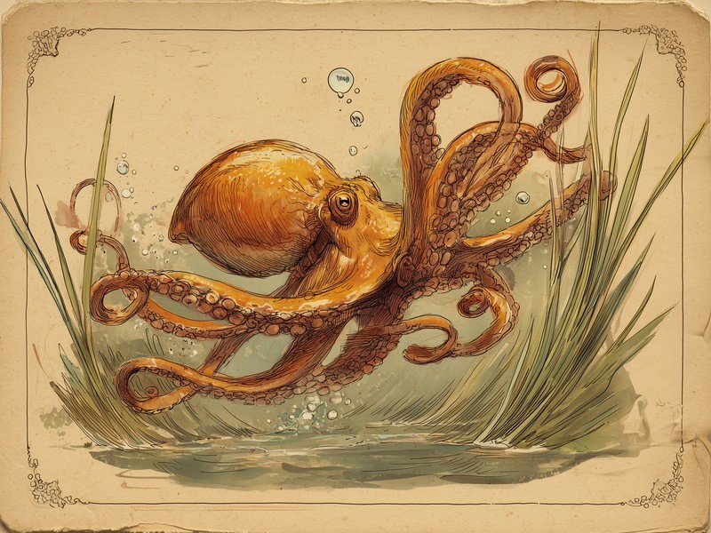

心臓を3つも持っているのに、いざ泳ぎ出すと一番大事な1つが止まってしまう「ざんねん」な体の仕組み。おかげでタコは、泳ぐより海底を這って歩くほうを選ぶ生活になりました。 Octopuses have three hearts, yet the main one stops beating every time they swim.
心臓が3つ、それぞれに役割分担
タコの3つの心臓は、左右のエラへ血液を送る「鰓心臓」が2つと、全身へ血液を押し出す「体心臓」が1つという役割分担になっています。鰓心臓(えらしんぞう)は左右に1つずつあるエラへそれぞれ血液を送り込み、エラで酸素を受け取った血液を体全体へ押し出すのが体心臓(たいしんぞう)の仕事。全身に酸素を届けるいちばん重要な役目を、体心臓が一手に引き受けているわけです。3つもあれば余裕がありそうに思えますが、この「全身担当がひとつだけ」という点が、のちのちのざんねんにつながっていきます。
ジェット噴射で泳ぐと、体心臓が止まる
1987年の研究で、タコがジェット噴射で泳いでいる間は、全身に血液を送る体心臓の拍動が止まってしまうことが分かっています。タコは外套膜(がいとうまく)と呼ばれる胴体の膜をぎゅっと縮め、水を勢いよく噴き出すジェット噴射で泳ぎます。ところが、Wellsらがマダコ(Octopus vulgaris)の血流を計測したその研究では、この泳ぎ方をしている間、体心臓の拍動が確かに止まっていました。外套膜を縮める圧力が、血液が心臓に戻ってくるのを物理的に妨げてしまい、送り出すものがなくなった心臓が休止してしまうのです。その結果、泳いだあとの体には酸素の「借金」が残ります。研究では体重1kgあたりおよそ22mLの酸素が不足すると見積もられていて、タコにとって泳ぐことはかなり燃費の悪い移動手段。せっかくの3つの心臓も、肝心なときに1つ止まってしまうとは、なんとも「ざんねん」な設計です。
出典: Wells, M.J. et al. "Blood Flow and Pressure Changes in Exercising Octopuses (Octopus vulgaris)" Journal of Experimental Biology, 1987. journals.biologists.com
だからタコは、泳ぐより歩く
泳ぐと体心臓が止まるほど燃費が悪いため、タコは腕で海底を這って移動するほうを強く好み、ジェット噴射で泳ぐのは緊急脱出のときがほとんどです。海底で暮らす種類は特にその傾向がはっきりしていて、泳ぐのは捕食者から逃げるときなどの短い場面に限られ、日常の移動手段としてはあまり使いません。8本の腕をしなやかに操って泳ぐ姿は絵になりますが、本人としては「できれば避けたい最終手段」。心臓が止まるほどのコストを払うくらいなら、地道に歩いたほうがましだという、なんとも堅実で「ざんねん」な選択です。
タコの血液は赤ではなく青色です。私たち人間や哺乳類の血は鉄を含むヘモグロビンで酸素を運ぶため赤く見えますが、タコは銅を含む「ヘモシアニン」というタンパク質で酸素を運んでいるため、血が青く見えるのです。